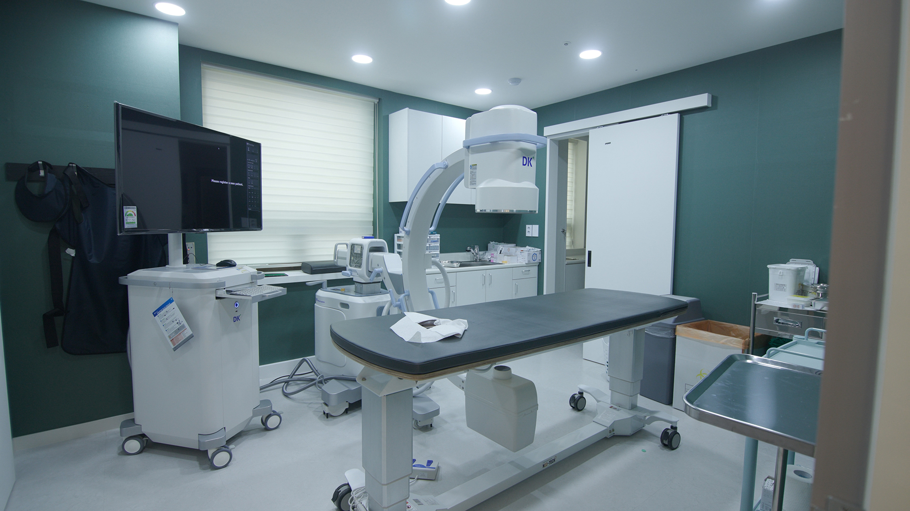
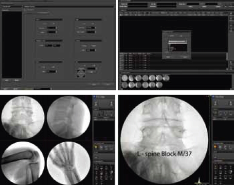
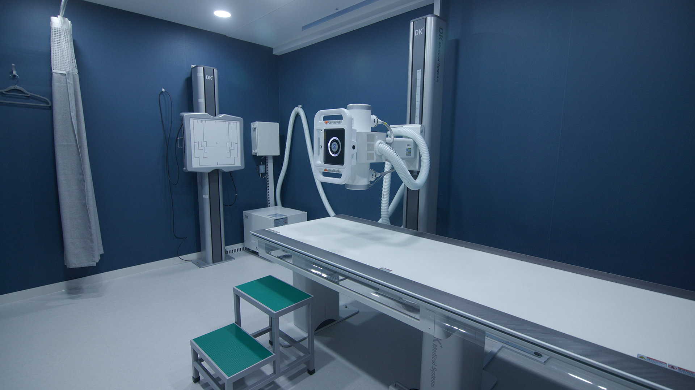

C-arm
영상투시장치의 일종으로 육안으로 확인이 어려운 신체 내부의 관절이나 뼈를 실시간으로 투시가 가능합니다.
통증이 발생한 부위를 촬영하며 정확히 약물을 주입할 수 있게 도와주며 주로 척추, 경추 질환 치료에서 사용됩니다.


X-ray
인체 내부의 뼈, 관절, 연부조직 등을 촬영하는 기기로 골절이나 부상을
파악할 수 있도록 x선을 체내로 쏘아 병변 부위를 확인합니다.
뿐만 아니라 흉부 촬영을 통해 결핵, 폐렴 등의 진단도 가능합니다.
